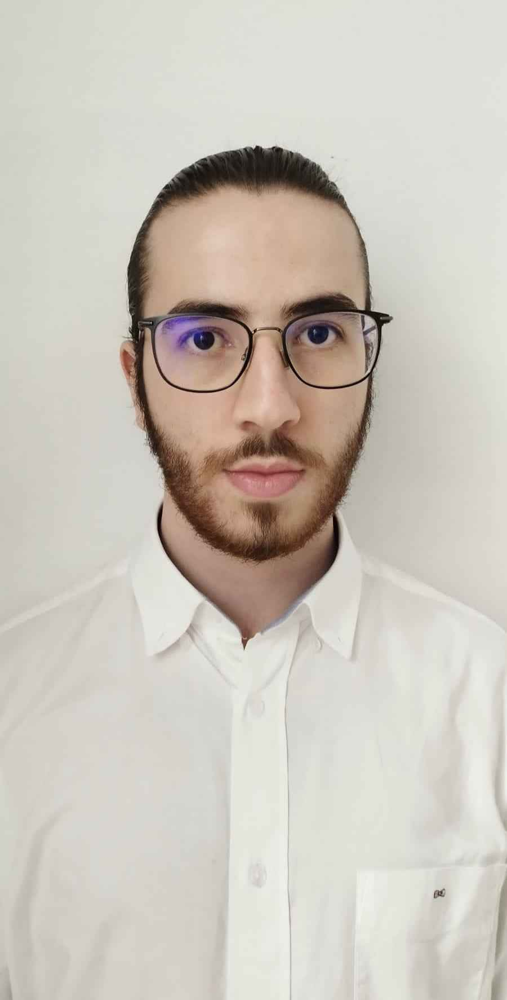

Présentation personnelle
Passionné d’informatique depuis le collège, je suis aujourd’hui étudiant en deuxième année de BUT Informatique, parcours RACDV (Réalisation d’Applications : Conception, Développement, Validation). Curieux, créatif et organisé, je m’investis pleinement dans les projets qui mêlent technique, collaboration et innovation. En parallèle de mes études, je suis aussi très engagé dans la vie étudiante à travers le BDE, et je développe des événements autour de l’univers du jeu vidéo, une autre de mes grandes passions.
